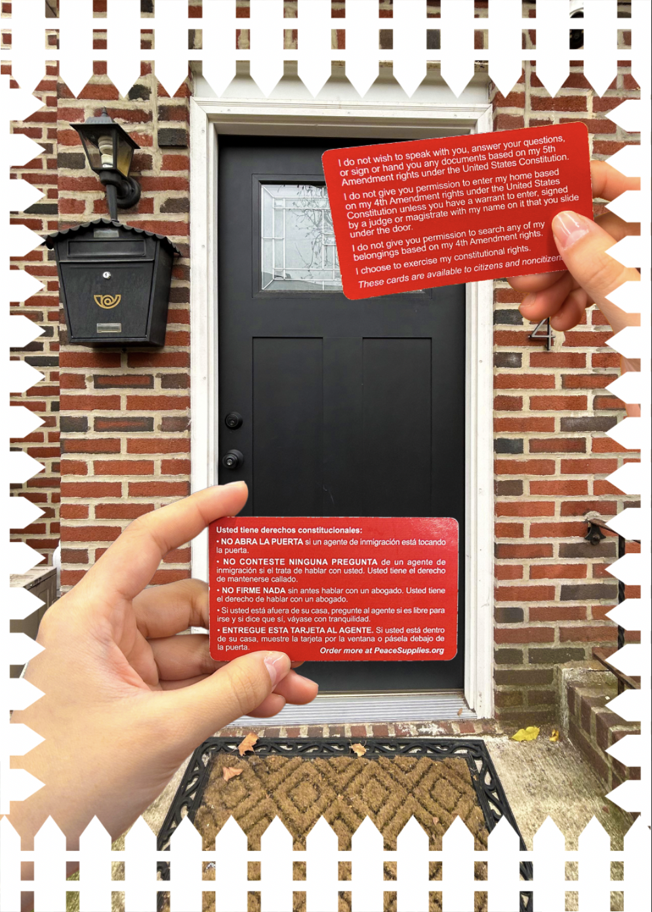
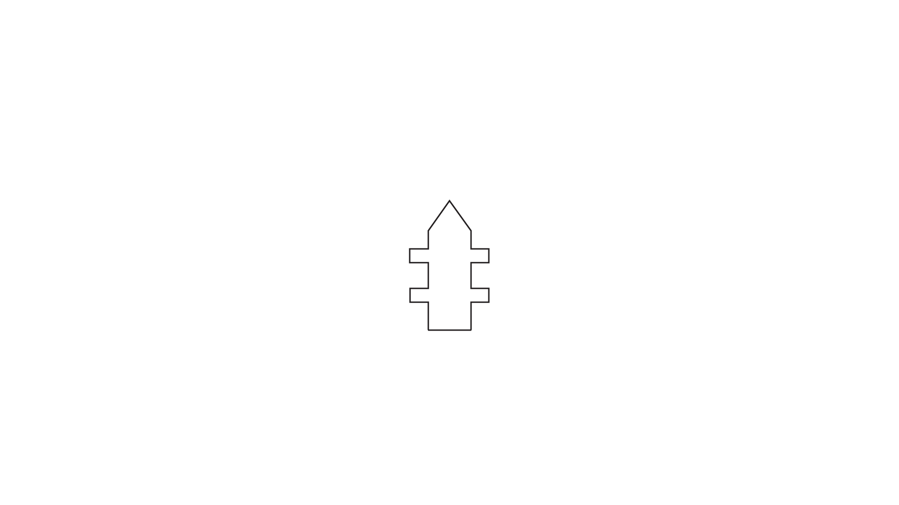

Pattern from Illustrator

I chose to create a white fence to add onto my second photomontage, as I felt that it looked a little like teeth. When surrounding the image with the fence, it made it look as though the hands/red vcards were trapped. I wanted it to look as it immigrants were essentially "trapped" by the American dream, especially now that it's essentially been destroyed. I heavily relied on symmetry for this, as I thought it would make the repetition of the pattern more seamless; I created the fence shape by merging a rectangle and polygon/triangle shape, then adding two smaller rectangles I copied and pasted. Since my pattern is a white .png file, I added a black outline/stroke to make it visible.
HOME